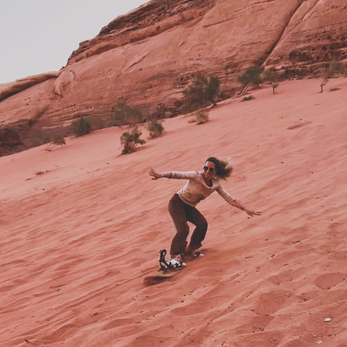
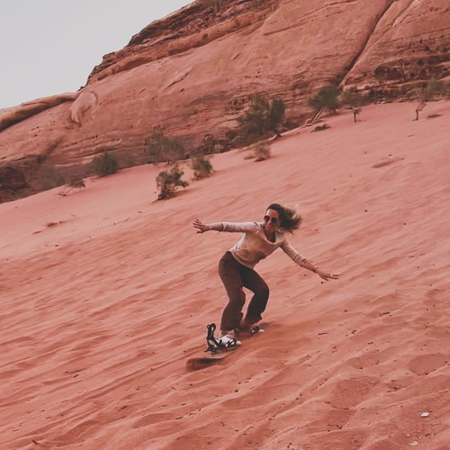

Tour 1
Desert Duo: Jeep Tour & Hike with Two Nights

**Discover the beauty and magic of Wadi Rum on this unforgettable two-night adventure.** You'll explore the desert's stunning landscapes, experience Bedouin culture, and sleep under a sky full of stars. Night 1: Your journey begins as you arrive at a traditional Bedouin camp just in time to watch the sun set over the desert. Enjoy a delicious dinner of local dishes, followed by a cozy evening around the campfire. Listen to stories of the desert and relax under the twinkling stars before settling into your tent for the night. Day 1: After breakfast, get ready for a full-day jeep tour through the most beautiful spots in Wadi Rum. Start with the vast Khor Al Ajram Valley, then visit Lawrence’s Spring, where you’ll learn about the history of Lawrence of Arabia. Next, climb the Red Sand Dune for amazing views of the desert. Continue your adventure at Wadi Khazali (Khazali Canyon), where ancient carvings tell stories of the past. Visit the Little Rock Bridge and take a peaceful hike through Abu Khashaba Canyon. The day’s highlight is the impressive Burdah Rock Bridge, the largest arch in Wadi Rum. Before heading back to camp, stop by the unique Mushroom Rock, shaped by the wind over many years. During the day, you’ll enjoy a traditional Bedouin lunch with refreshing tea breaks. As the day ends, have dinner under the stars and get ready for another magical night in the desert. Night 2: For your second night, you have a special treat—sleeping outside under the stars. Lay down on soft blankets and let the quiet of the desert surround you as you drift off to sleep beneath a sky full of shimmering stars. It's a night you’ll never forget. Day 2: Start your morning with a hearty breakfast as the desert awakens around you. Spend the morning exploring more of Wadi Rum with another jeep tour or a hike, depending on what you feel like. This is your chance to soak in the peaceful beauty of the desert one last time before your adventure ends.
Highlights:
 Full-day jeep tour through Khor
Al Ajram Valley, Lawrence’s Spring, Red Sand Dune, and Wadi Khazali (Khazali Canyon)
Full-day jeep tour through Khor
Al Ajram Valley, Lawrence’s Spring, Red Sand Dune, and Wadi Khazali (Khazali Canyon)- Visit to Little Rock Bridge and
Abu Khashaba Canyon
- Admire the Burdah Rock Bridge
and the Mushroom Rock
- Traditional Bedouin lunch, tea
breaks, dinner, and breakfast included
- Two nights in the desert with
options to sleep under the stars or in cozy traditional Bedouin tents
Price:
- 1 Person 200 JOD
- 2-3 Persons 50 JOD each
- 4-5 Persons 40 JOD each
- 5+ Persons 35 JOD each
You Visit:
 Khor Al Ajram Valley
Khor Al Ajram Valley- Ain Abu Aina (Lawrence’s
Spring)
- Wadi Khazali (Khazali Canyon)
- The Red Sand Dune
- The Little Rock Bridge
- Anfishiyeh Inscriptions
- Umm Fruth Rock Bridge
- Burdah Rock Bridge, the
largest natural arch in Wadi Rum
- Khashaba Canyon
- Geber Amra Canyon
Included:
 Bedouin Tea
Bedouin Tea- Water
- Sunset viewing
- South Desert (optional for quieter
experience)
- Lunch, dinner, breakfast, and
water!
 
